텐피엠이 써본 것만 모음
@tenpm.lab
퇴근 후 AI가 시키는 대로 부업 실험 중인 30대 직장인 아빠. 우리 집·회사에서 실제로 쓰는 것만 올려요.
이 페이지의 링크는 쿠팡 파트너스 활동의 일환으로, 이에 따른 일정액의 수수료를 제공받습니다.
'페이백'은 구매 후 리뷰 작성 대가로 구매 금액을 돌려받은 제품이에요. '비슷한 상품'은 우리가 산 게 품절이거나 물려받은 거라 비슷한 걸 걸어둔 거예요. 가격은 글 쓸 때(11월) 기준이라 지금은 다를 수 있어요.
육아 3
살림 5
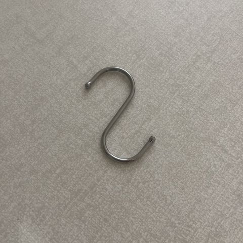
S고리 10개
“수건걸이에 걸고 청소솔·스프레이 매달아 둠”
5,500원 (10개)
쿠팡에서 보기 ›
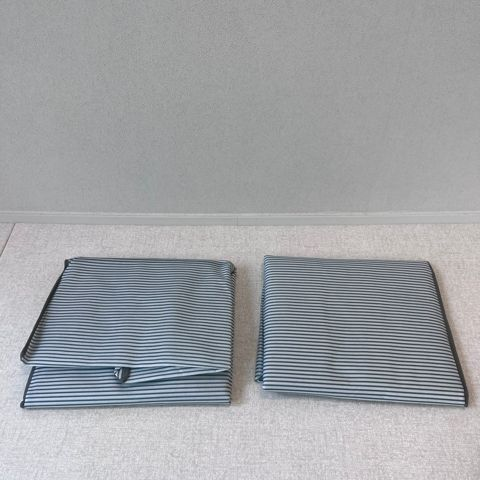
대용량 리빙박스 180L
“제각각인 이불·가방을 한 번에 정리”
가격은 쿠팡에서 확인
쿠팡에서 보기 ›
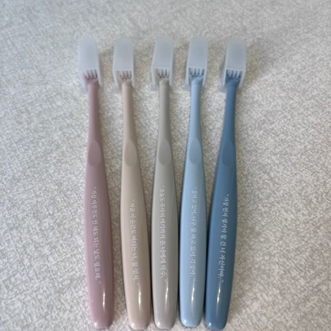
응원 문구 칫솔 20개
“칫솔대마다 응원 한마디, 하나에 640원꼴”
12,820원 (20개)
쿠팡에서 보기 ›
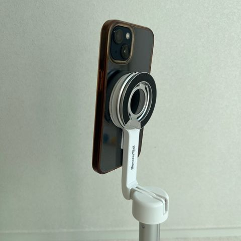
자석 삼각대 셀카봉 1.7m
“요리 영상 찍을 때 씀. 폰이 자석으로 붙음”
가격은 쿠팡에서 확인
쿠팡에서 보기 ›
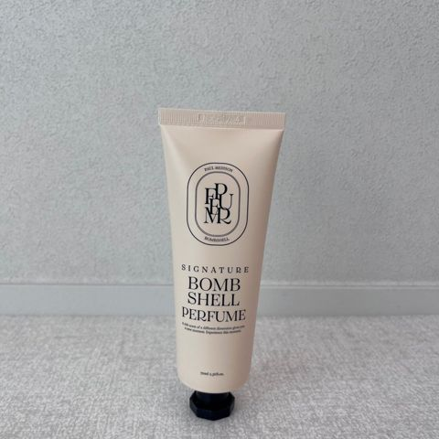
핸드크림
“바르고 바로 키보드 쳐도 안 묻어남”
10,900원 (3개)
쿠팡에서 보기 ›
직장인 책상 6
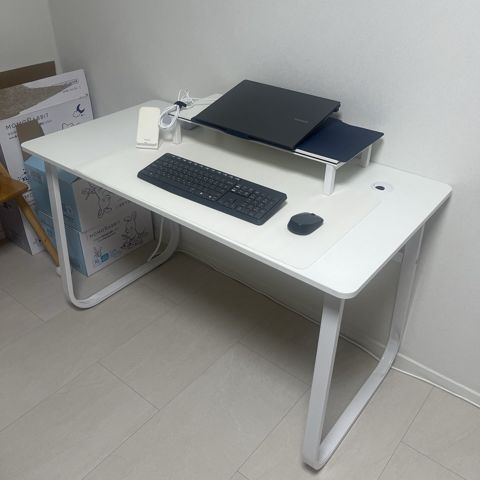
컴퓨터 책상 + 모니터 받침대 세트
“폭 1200, 3개월 넘게 쓰는 중”
34,990원
쿠팡에서 보기 ›
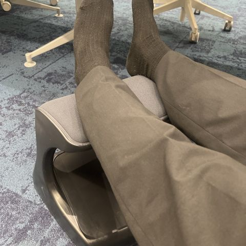
책상 밑 2단 발받침대
“점심엔 다리 올리고 눕기”
가격은 쿠팡에서 확인
쿠팡에서 보기 ›
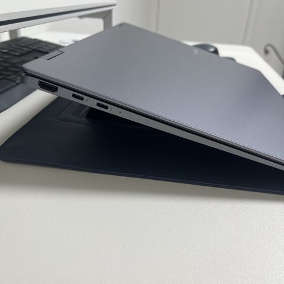
가죽 노트북 파우치 겸 거치대
“색 안 배고, 펴면 마우스패드”
16,900원
쿠팡에서 보기 ›
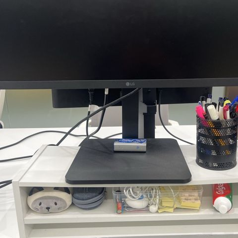
서랍형 모니터 받침대
“이어폰·포스트잇 다 들어감”
9,980원
쿠팡에서 보기 ›
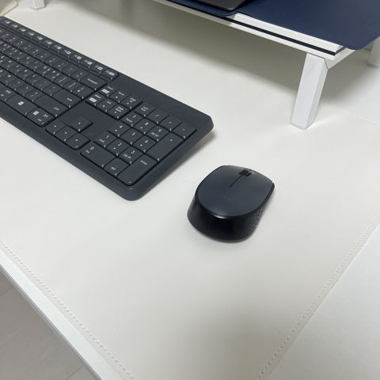
책상 매트 80x40
“8,800원인데 마감이 안 싸 보임”
8,800원
쿠팡에서 보기 ›
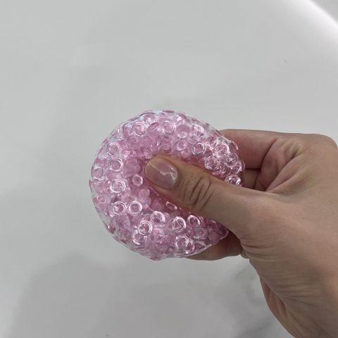
말랑이 손장난감
“회의 중 손 심심할 때”
3,800원
쿠팡에서 보기 ›